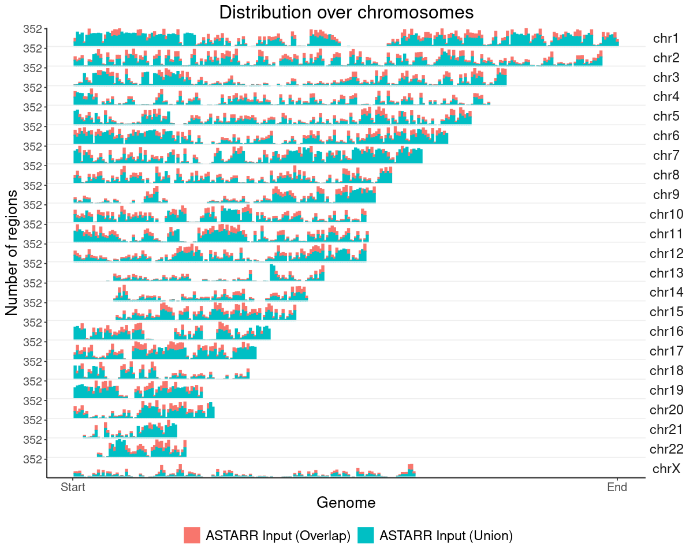
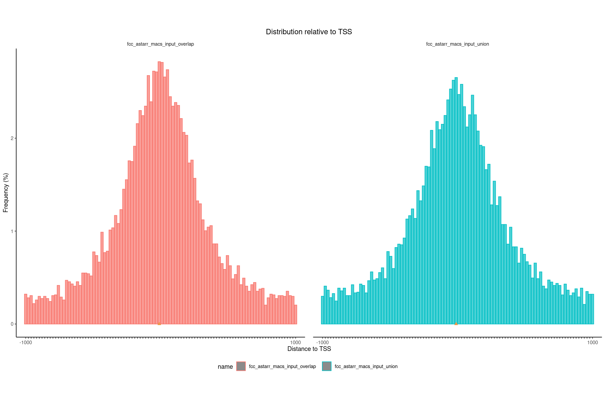

You are working on Singularity: singularity_proj_encode_fcc
BASE DIRECTORY (FD_BASE): /data/reddylab/Kuei
REPO DIRECTORY (FD_REPO): /data/reddylab/Kuei/repo
WORK DIRECTORY (FD_WORK): /data/reddylab/Kuei/work
DATA DIRECTORY (FD_DATA): /data/reddylab/Kuei/data
You are working with ENCODE FCC
PATH OF PROJECT (FD_PRJ): /data/reddylab/Kuei/repo/Proj_ENCODE_FCC
PROJECT RESULTS (FD_RES): /data/reddylab/Kuei/repo/Proj_ENCODE_FCC/results
PROJECT SCRIPTS (FD_EXE): /data/reddylab/Kuei/repo/Proj_ENCODE_FCC/scripts
PROJECT DATA (FD_DAT): /data/reddylab/Kuei/repo/Proj_ENCODE_FCC/data
PROJECT NOTE (FD_NBK): /data/reddylab/Kuei/repo/Proj_ENCODE_FCC/notebooks
PROJECT DOCS (FD_DOC): /data/reddylab/Kuei/repo/Proj_ENCODE_FCC/docs
PROJECT LOG (FD_LOG): /data/reddylab/Kuei/repo/Proj_ENCODE_FCC/log
PROJECT REF (FD_REF): /data/reddylab/Kuei/repo/Proj_ENCODE_FCC/references
Import data
Helper function: loading data
Code
fun_load_data =function(txt_region_fdiry){### set file directory txt_fdiry =file.path(txt_region_fdiry, "summary") txt_fname ="description.tsv" txt_fpath =file.path(txt_fdiry, txt_fname)### get column names dat =read_tsv(txt_fpath, show_col_types =FALSE) vec_txt_cname = dat$Name### set file directory txt_fdiry =file.path(txt_region_fdiry, "summary") txt_fname ="metadata.label.tsv" txt_fpath =file.path(txt_fdiry, txt_fname)### get file labels dat_metadata =read_tsv(txt_fpath, show_col_types =FALSE)### set directory txt_fdiry = txt_region_fdiry txt_fglob =file.path(txt_fdiry, "*bed*")### get file names and labels vec_txt_fpath =Sys.glob(txt_fglob) vec_txt_fname =basename(vec_txt_fpath) vec_txt_label =fun_str_map_match( vec_txt_fname, dat_metadata$FName, dat_metadata$Label, .default=vec_txt_fname)### further modification of labels vec_txt_label =gsub("^dnase", "DNase", vec_txt_label) vec_txt_label =gsub("^atac", "ATAC", vec_txt_label) vec_txt_label =gsub("fcc_astarr_macs_input_union", "ASTARR Input (Union)", vec_txt_label) vec_txt_label =gsub("fcc_astarr_macs_input_overlap", "ASTARR Input (Overlap)", vec_txt_label)### read all region files lst =lapply(vec_txt_fpath, function(txt_fpath){ dat =read_tsv(txt_fpath, col_names = vec_txt_cname, show_col_types =FALSE)return(dat) })names(lst) = vec_txt_labelreturn(lst)}
Load data
Code
### set file directorytxt_folder ="fcc_astarr_macs_merge"txt_fdiry =file.path(FD_RES, "region", txt_folder)### read tableslst =fun_load_data(txt_fdiry)### assign and showlst_dat_region_astarr_input = lstprint(lapply(lst, nrow))
### initlst_dat = lst_dat_region_astarr_input### setup grangeslst_grg =lapply(lst_dat, function(dat){### filter out ChrY vec =paste0("chr", c(1:22, "X")) dat = dat %>% dplyr::filter(Chrom %in% vec)### dataframe -> granges grg =GRanges(seqnames = dat$Chrom,ranges =IRanges(start = dat$ChromStart, end = dat$ChromEnd) )return(grg)})### preserve labelsnames(lst_grg) =names(lst_dat)### create grangesListlst_grg =GRangesList(lst_grg)### assign and showlst_grg_region_astarr_input = lst_grg
Code
### initlst_dat = lst_dat_region_encode_ocr### setup grangeslst_grg =lapply(lst_dat, function(dat){### filter out ChrY vec =paste0("chr", c(1:22, "X")) dat = dat %>% dplyr::filter(Chrom %in% vec)### dataframe -> granges grg =GRanges(seqnames = dat$Chrom,ranges =IRanges(start = dat$ChromStart, end = dat$ChromEnd) )return(grg)})### preserve labelsnames(lst_grg) =names(lst_dat)### create grangesListlst_grg =GRangesList(lst_grg)### assign and showlst_grg_region_encode_ocr = lst_grg
Summarize
Code
lst_grg = lst_grg_region_astarr_inputlst_dat =list(### aggregate and count the distribution of regions across bins of ref genome"chrom_bin_cnt"=suppressMessages(calcChromBinsRef( lst_grg, "hg38", binCount =3000)),### distance of each region to its nearest feature element"fdist_tss_frq"=suppressMessages(calcFeatureDistRefTSS( lst_grg, "hg38")),### partition distribution by different gencode element (UTR, exon, intron, etc)"gcode_par_frq"=suppressMessages(calcPartitionsRef( lst_grg, "hg38")),"gcode_par_ove"=suppressMessages(calcExpectedPartitionsRef(lst_grg, "hg38")))lst_dat_stats_astarr_input = lst_dat
Code
lst_grg = lst_grg_region_encode_ocrlst_dat =list(### aggregate and count the distribution of regions across bins of ref genome"chrom_bin_cnt"=suppressMessages(calcChromBinsRef( lst_grg, "hg38", binCount =3000)),### distance of each region to its nearest feature element"fdist_tss_frq"=suppressMessages(calcFeatureDistRefTSS( lst_grg, "hg38")),### partition distribution by different gencode element (UTR, exon, intron, etc)"gcode_par_frq"=suppressMessages(calcPartitionsRef( lst_grg, "hg38")),"gcode_par_ove"=suppressMessages(calcExpectedPartitionsRef(lst_grg, "hg38")))lst_dat_stats_encode_ocr = lst_dat
Explore data
Chromosome distribution (Genomic distribution)
Code
### set text sizetheme_text =theme(title =element_text(size =16),axis.title =element_text(size =16),axis.text =element_text(size =12),legend.title =element_text(size =0),legend.text =element_text(size =14),strip.text.y =element_text(size =14))
ASTARR Input MACS peaks
Code
### get datalst = lst_dat_stats_astarr_inputdat = lst[["chrom_bin_cnt"]]gpt =plotChromBins(dat)gpt = gpt + theme_text### assign plotgpt_astarr_input = gpt### show plotoptions(repr.plot.height=8, repr.plot.width=10)gpt
Warning message:
"Removed 246 rows containing missing values or values outside the scale range (`geom_bar()`)."

ENCODE Open chromatin regions
Code
### get datalst = lst_dat_stats_encode_ocrdat = lst[["chrom_bin_cnt"]]gpt =plotChromBins(dat)gpt = gpt + theme_text### assign plotgpt_encode_ocr = gpt### show plotoptions(repr.plot.height=8, repr.plot.width=10)gpt
Warning message:
"Removed 1578 rows containing missing values or values outside the scale range
(`geom_bar()`)."
Warning message:
"Removed 246 rows containing missing values or values outside the scale range (`geom_bar()`)."
Warning message:
"Removed 1578 rows containing missing values or values outside the scale range
(`geom_bar()`)."
### get datalst = lst_dat_stats_astarr_inputdat = lst[["fdist_tss_frq"]]### create and show plotoptions(repr.plot.height=10, repr.plot.width=15)plotFeatureDist(dat, featureName="TSS", size =1e+03)
Scale for x is already present.
Adding another scale for x, which will replace the existing scale.

ENCODE Open chromatin regions
Code
### get datalst = lst_dat_stats_encode_ocrdat = lst[["fdist_tss_frq"]]### create and show plotoptions(repr.plot.height=10, repr.plot.width=15)plotFeatureDist(dat, featureName="TSS", size =1e+03)
Scale for x is already present.
Adding another scale for x, which will replace the existing scale.